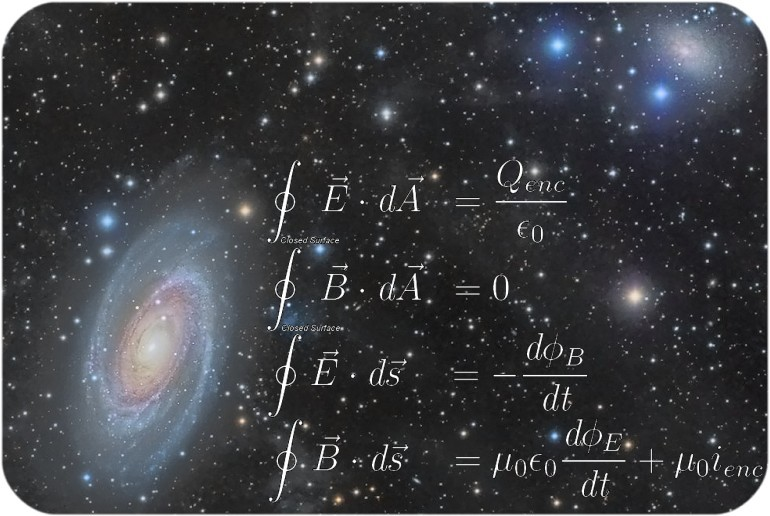
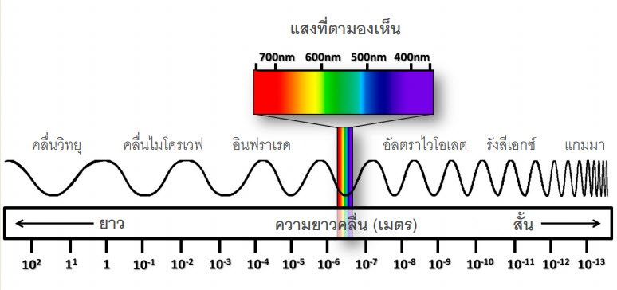
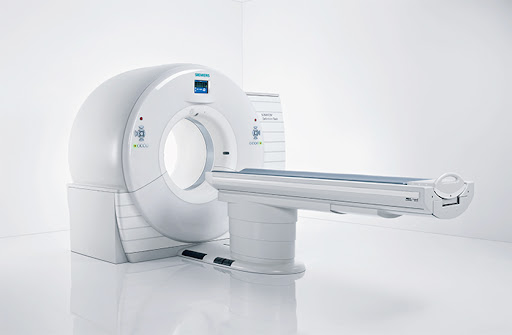

🧬บทนำ (Introduction)
โลกของคลื่นแม่เหล็กไฟฟ้า ในจักรวาลอันกว้างใหญ่ พลังงานส่วนใหญ่เดินทางมาถึงเราในรูปแบบที่มองไม่เห็น แต่กลับมีความสำคัญอย่างยิ่งต่อการดำรงชีวิต ตั้งแต่ความอบอุ่นของแสงแดดไปจนถึงสัญญาณอินเทอร์เน็ตไร้สาย คลื่นแม่เหล็กไฟฟ้าเป็นปรากฏการณ์ทางฟิสิกส์ที่เชื่อมโยงระหว่างไฟฟ้าและแม่เหล็ก เป็นตัวกลางสำคัญในการส่งผ่านพลังงานและข้อมูลผ่านสุญญากาศ
📐ทฤษฎีที่เกี่ยวข้อง
ทฤษฎีของคลื่นแม่เหล็กไฟฟ้าอธิบายด้วยสมการของ James Clerk Maxwell ซึ่งรวมกฎของไฟฟ้าและแม่เหล็กเข้าไว้ด้วยกัน เป็นพื้นฐานของเทคโนโลยีการสื่อสาร ดาวเทียม และการสำรวจอวกาศของ NASA
🌈สเปกตรัมของคลื่นแม่เหล็กไฟฟ้า
สเปกตรัมของคลื่นแม่เหล็กไฟฟ้า คือแถบแสดงความต่อเนื่องของคลื่นแม่เหล็กไฟฟ้า เรียงตามพลังงานจากต่ำไปสูง แบ่งออกเป็น 7 ช่วงหลัก ได้แก่ คลื่นวิทยุ, ไมโครเวฟ, อินฟราเรด, แสงที่มองเห็น, อัลตราไวโอเลต, เอกซ์เรย์ และแกมมาเรย์ แต่ละช่วงมีคุณสมบัติและการใช้งานที่แตกต่างกัน
🔬โพลาไรเซชันของคลื่นแม่เหล็กไฟฟ้า
โพลาไรเซชัน คือการจำกัดทิศทางการสั่นของสนามไฟฟ้า จากเดิมที่แสงธรรมชาติสั่นหลายทิศทาง กระบวนการนี้ถูกนำไปใช้ในแว่นกันแดด กล้องถ่ายภาพ และระบบเลเซอร์ขั้นสูง
🧠เครื่อง MRI
เครื่อง MRI ใช้สนามแม่เหล็กความเข้มสูงร่วมกับคลื่นวิทยุ เพื่อสร้างภาพอวัยวะภายในอย่างละเอียดโดยไม่ใช้รังสีอันตราย เหมาะสำหรับการตรวจสมอง ไขสันหลัง และเนื้อเยื่ออ่อน
🦴เครื่อง CT Scan
CT Scan ใช้รังสีเอกซ์หมุนรอบตัวผู้ป่วย สร้างภาพตัดขวางแบบสามมิติ ช่วยให้แพทย์วินิจฉัยโรคได้อย่างแม่นยำและรวดเร็ว
